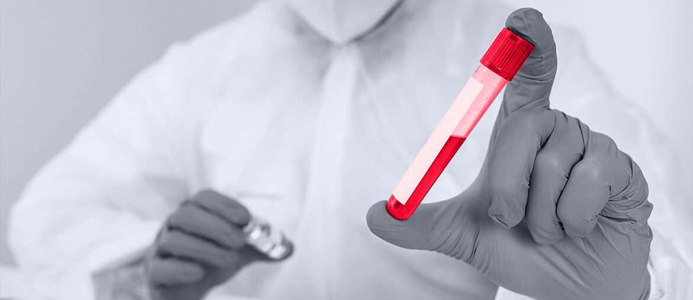

Map the handoffs
Audit WordPress, portal pages, tracking tags, and content handoffs across SmileShop and Marketing4ECPs to find launch blockers.
Wade, I saw POD is adding contractor editor capacity. When content volume rises across SmileShop and Marketing4ECPs, CMS work, portal updates, QA, and tracking often become the next bottleneck.
The signal says your dental and eye care teams are adding more content capacity. That fits the public picture: POD runs vertical brands, client websites, and member portals with libraries, training, branded video, and marketplace content. The hard part is not only writing more. It is keeping WordPress builds, portal pages, tracking, accessibility, and client requests moving at the same speed. If that lags, editors wait, launches slow, and account teams carry more manual follow-up.
Elinext would add a small technical team beside POD, not between POD and its clients.
Audit WordPress, portal pages, tracking tags, and content handoffs across SmileShop and Marketing4ECPs to find launch blockers.
Clean the heaviest portal pages, image handling, and theme assets so members reach libraries, training, and marketplace content faster.
Add QA checks for responsiveness, accessibility, forms, tracking, and DNS changes before each client website or portal release.
Shape one content workflow helper for editors: templates, tagging rules, and light AI support for review prep.

Secure healthcare portal for desktop and mobile access.
Read the case study